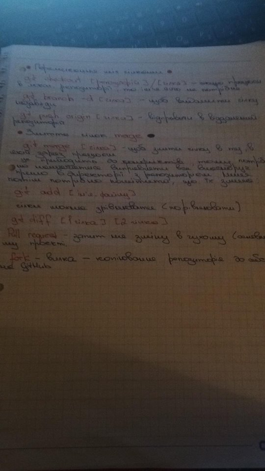
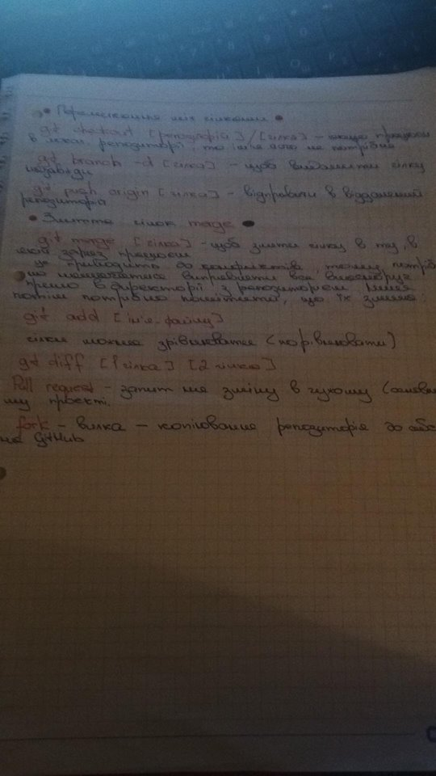

1.Set up Git (and configure) on your local machine.

2.Github profile review.
https://github.com/dzhandzhala
Плюси
- посилання на фб
- пошта
- вказане місто,країна
- є моя фотографія
Мінуси
- потрібно працювати з репозиторіями, комітити
- активно ставити зірочки, фоловити
- потрібно додати лінк на linkedlin
3.Create and configure first repository from console. Push few files.


4.Create and configure first repository from Github. Push few files.


 
